Logboek
Mijn dagelijkse bezigheden die mogelijk interessant zijn voor anderen.
Januari 2023
Vrijdag | 05-01-2023
- Website: Verder gewerkt aan de over pagina.
Donderdag | 04-01-2023
- Website: Geoefend met Quarto en het uitzoeken van een pallet.

- CV: Georiënteerd op CV’s in Quarto. Het vitae package lijkt interessant.
Woensdag | 04-01-2023
- fAIr: Mitigating Bias in Artificial Intelligence is onderdeel van Haas School of Business (University of California, Berkeley) - Center for Equity, Gender & Leadership. Hebben een playbook ontwikkeld. Rapport opgenomen in papers: Smith, G., & Rustagi, I. (2020). Mitigating Bias in Artificial Intelligence (p. 62). Berkeley Haas Center for Equity, Gender and Leadership.
- Netwerk analyse: nnet - Network Analysis and Community Detection
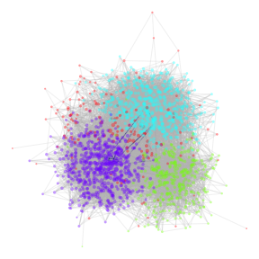
- Clustering: tidyclust - The goal of tidyclust is to provide a tidy, unified interface to clustering models. The packages is closely modeled after the parsnip package.
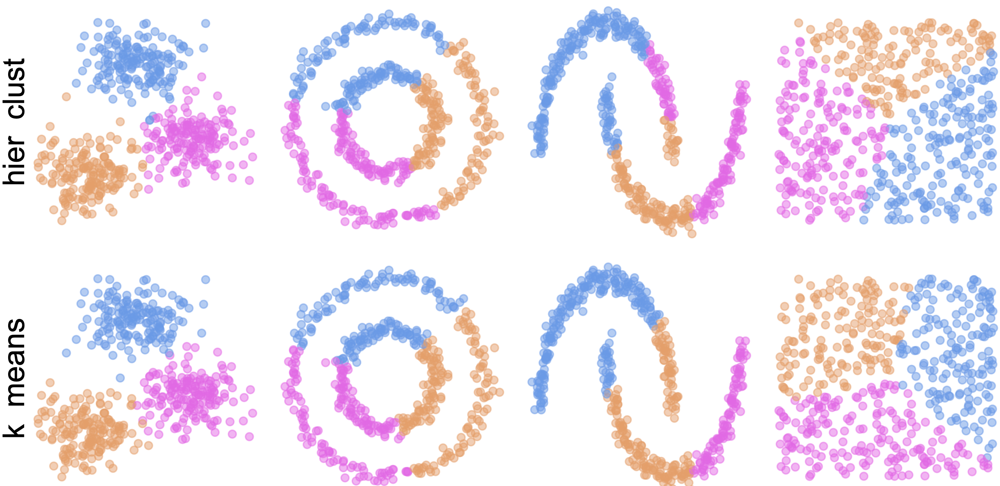
- Outliers: How to perform a kfino outlier detection met het kfino package.
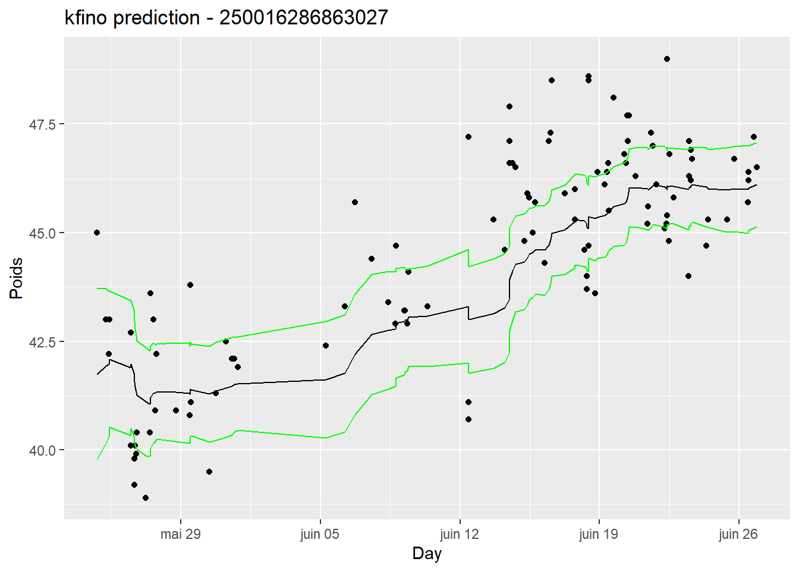
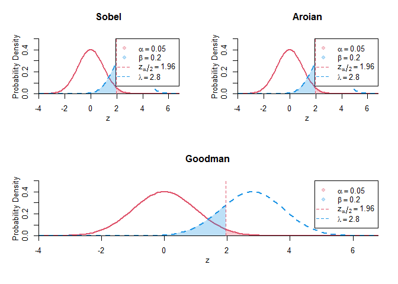
- Heatmap: funkyheatmap package: Provides functions for generating heatmap-like visualizations for benchmark data frames, which can be fine-tuned with annotations for columns and rows.
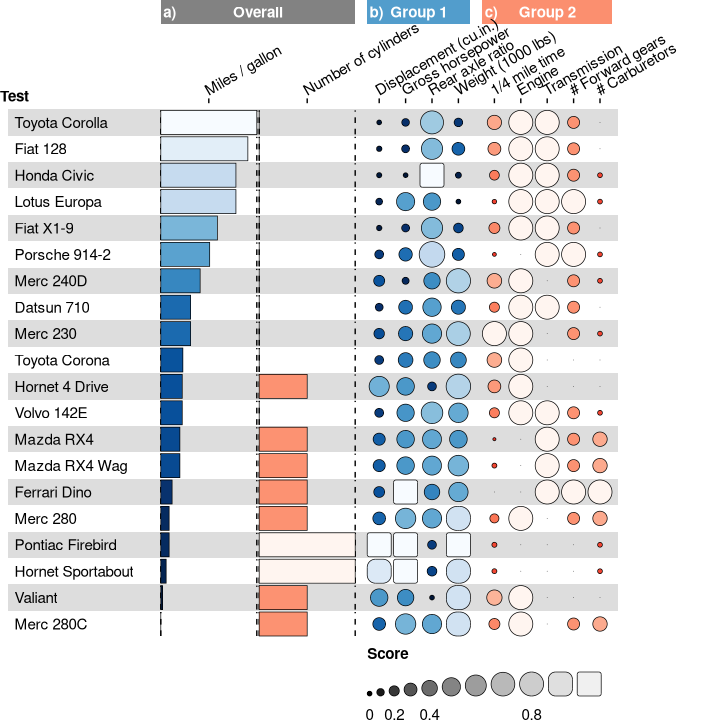
- Visualisatie: ggpcp v0.2.0: Provides a Grammar of Graphics implementation of parallel coordinate plots that incorporates categorical variables into the plots in a principled manner.
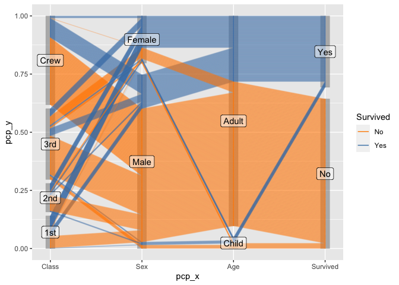
- Reviews: Voor LAK23 en voor Psychology in the Schools.
Dinsdag | 03-01-2023
- GIS: Eerste kaartje van Den Haag gemaakt!
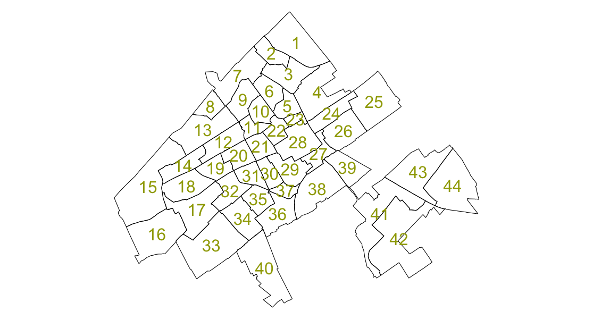
- GIS: Korte cursus ggplot en sf gevolgd. Drawing beautiful maps programmatically with R, sf and ggplot2 — Part 1: Basics, Drawing beautiful maps programmatically with R, sf and ggplot2 — Part 2: Layers en Drawing beautiful maps programmatically with R, sf and ggplot2 — Part 3: Layouts
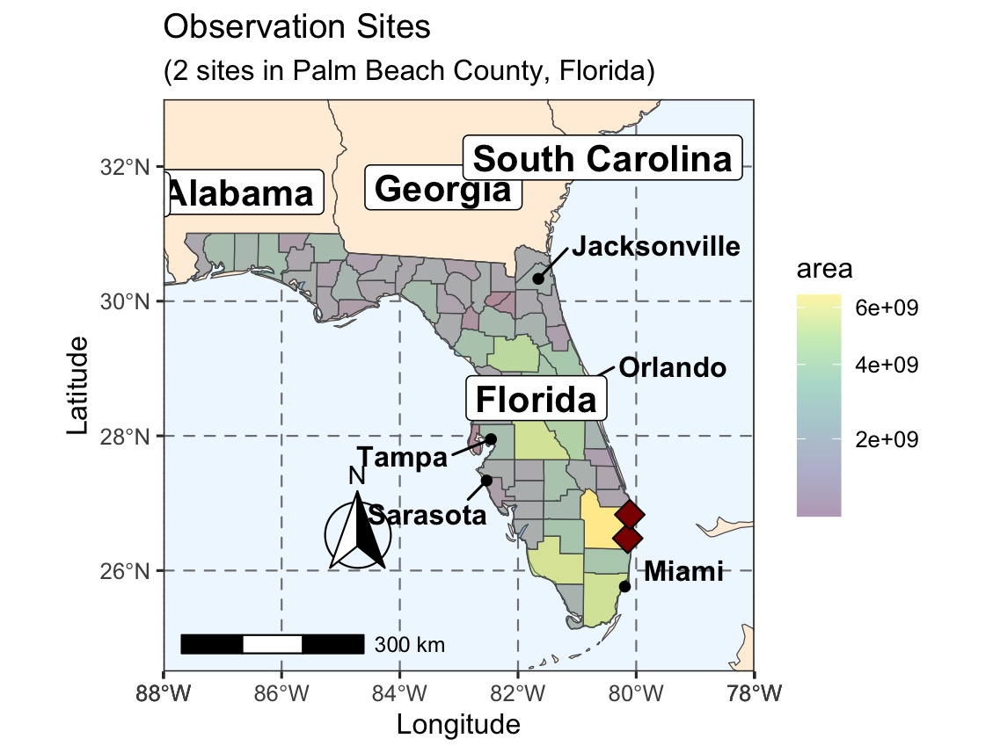
- fAIr: MOSTLY AI - Bedrijf uit Oostenrijk dat gebruik maakt van datasynthetisatie om fair AI te realiseren.
- fAIr: Fairness and Machine Learning - Limitations and Opportunities van Solon Barocas, Moritz Hardt, Arvind Narayanan.
Maandag | 02-01-2023
- Google ML: Een game die met ML antwoorden genereert die nog niet van tevoren bekend zijn. Semantic ML.
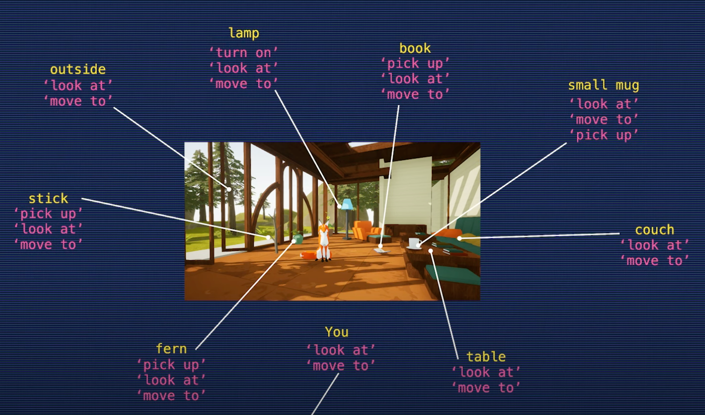
- Neuroinclusive design: Ontwerp van software voor neurodiverse gebruikers.
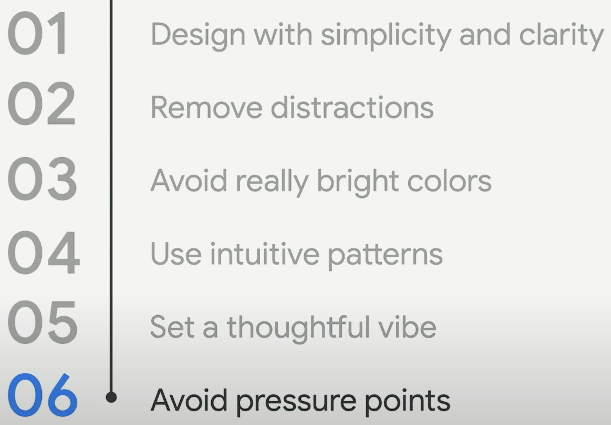
- Technische trends: 10 IT-trends volgens Google
- Visualisaties: Gebruik van ternaire kleurcodering om afwijking van een gemiddelde te laten zien. Package: tricolore.
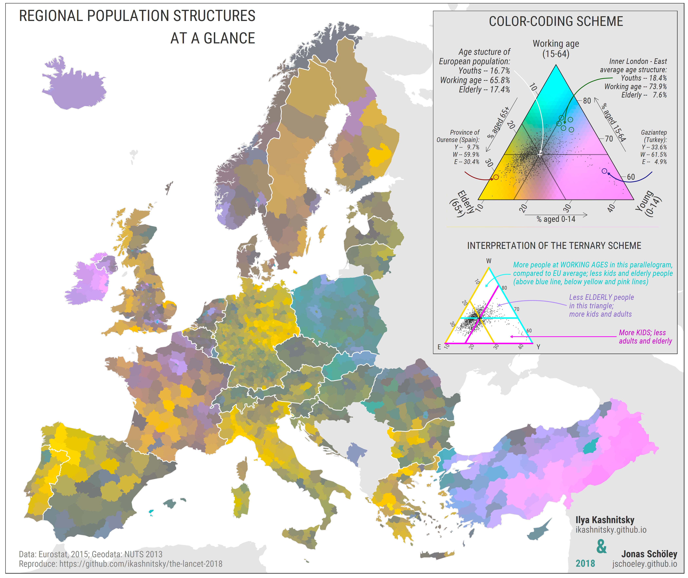
- Open AI: Meerdere artikelen op NRC gelezen (opgeslagen in papers).
- Parttree: Package om visualisaties te maken van tree based decisions.
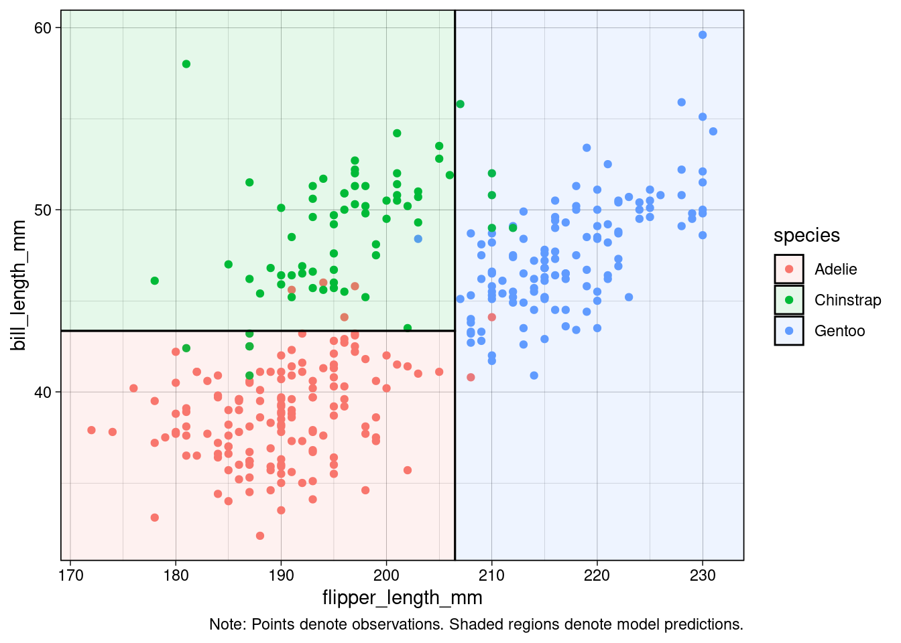
Zondag | 01-01-2023
- Ggplot2: Ggplot2 cursus gevolgd (intro en dl 1 en dl 2) van Cédric Scherer.
- Ggplot2: camcorder package om ggplot in R makkelijk te bewaren.
- LinkedIn: Kenbaar gemaakt dat ik een nieuwe baan heb.
- Twitter: Profiel aangepast.
- Tensorflow: Kennis mee gemaakt vanuit video over de technologie achter GPT. Link naar Tensorflow (Classify text with BERT). R heeft een eigen versie voor R studio met bijbehorende website.
- AI: Bot om reacties op een chatfunctie te filteren op ongepast gedrag. ‘I built an AI-powered moderation bot for Discord’. De api die erbij gebruikt is: perspective.
December 2022
Zaterdag | 31-12-2022
- fAIr: Boek aangeschaft over fair AI. Lobel, O. (2022). The Equality Machine: Harnessing Digital Technology for a Brighter, More Inclusive Future. Verder gelezen (circa helft)
Dinsdag | 27-12-2022
- Multiaccuracy boost: een methode om bias te corrigeren op minderheidsgroepen. Zie mcboost. TODO: doornemen

- Modelling: Gebruik het stacks package om eenvoudig ensembles te maken. Hacking by stacking—how to get better {tidymodels} performance with {stacks}
- Kleur en kleurenblindheid: Viridis colorscale.
viridis, and its companion packageviridisLiteprovide a series of color maps that are designed to improve graph readability for readers with common forms of color blindness and/or color vision deficiency. The color maps are also perceptually-uniform, both in regular form and also when converted to black-and-white for printing.
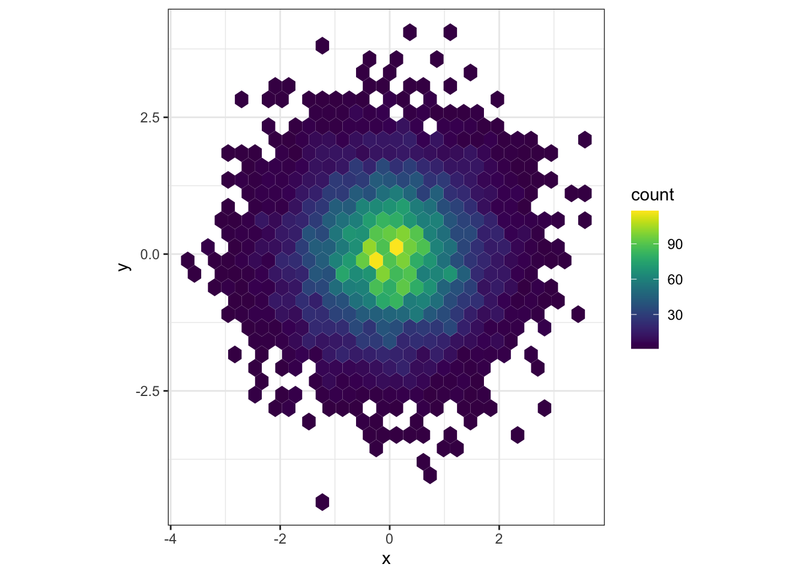
- Visualisatie: Calendarheatmap. Gebruikt om tweets te visualiseren. Heeft nog 2 andere visualisaties voor tweets: tweet frequency over the years.
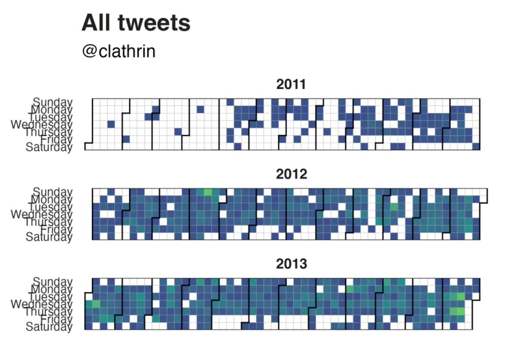
Maandag | 26-12-2022
- fAIr: Boek aangeschaft over fair AI. Lobel, O. (2022). The Equality Machine: Harnessing Digital Technology for a Brighter, More Inclusive Future. PublicAffairs.
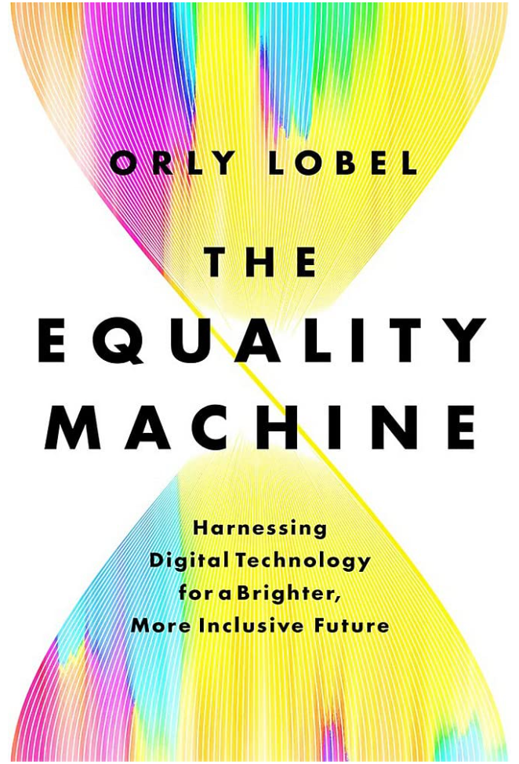
- SIG AI: Jaarplan gelezen.
- Statistiek: Keuzes voor testen.

- Google Analytics: Google Analytics in R: Review of 2022
- Visualisatie: ggdist: Visualizations of distributions and uncertainty
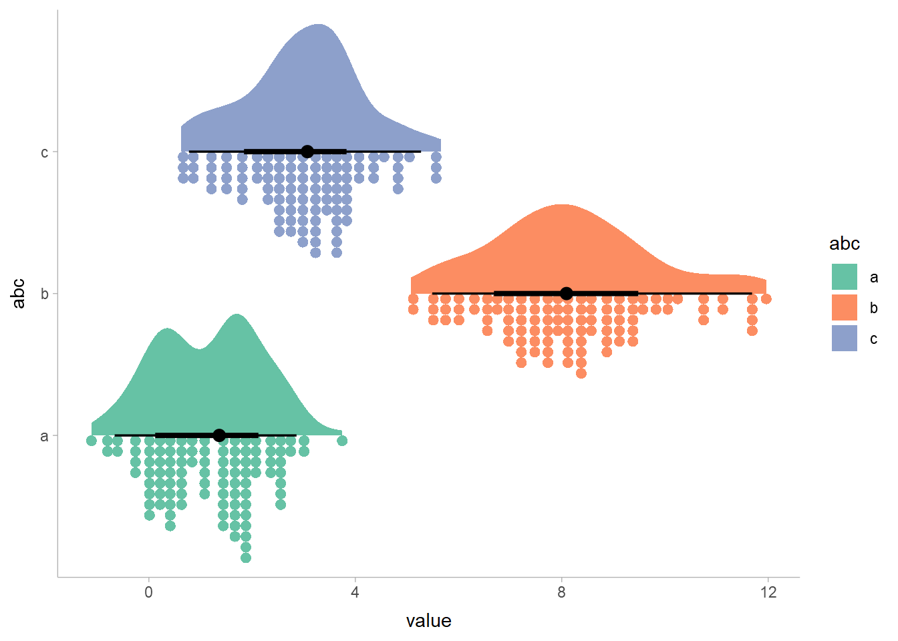
- Blog: Met distill, github en netlify kan je een blog maken (video) of met quarto.
- Artikel: Baarsma, B., Haar, B. T., Wijnands, B., Blom, F., Wijers, H., Winter, J., … Veeken, R. V. der. (2021). De datagedreven toekomst.nl (pp. 1–56). Denkwerk. Retrieved from Denkwerk website: https://denkwerk.online/rapporten/de-datagedreven-toekomstnl-februari-2021/. Hoofdstukken 5-7 gelezen.
- Artikel: Baarsma, B., Haar, B. T., Wijnands, B., Blom, F., Wijers, H., Winter, J., … Veeken, R. V. der. (2021). De online wereld.nl: hoe we grip terugpakken op onze online wereld (pp. 1–64). Denkwerk. Retrieved from Denkwerk website: https://denkwerk.online/rapporten/de-online-wereldnl-februari-2021/. Gelezen; met name interessant is het idee van de s-curve.
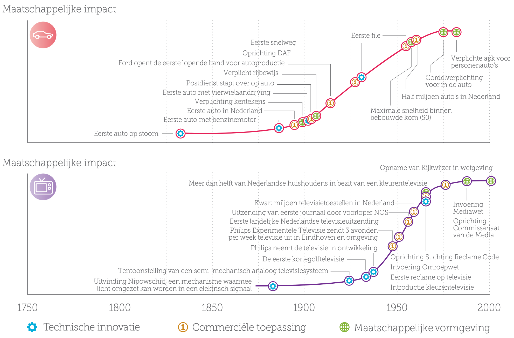
Zondag | 25-12-2022
- Artikel: Baarsma, B., Haar, B. T., Wijnands, B., Blom, F., Wijers, H., Winter, J., … Veeken, R. V. der. (2021). De datagedreven toekomst.nl (pp. 1–56). Denkwerk. Retrieved from Denkwerk website: https://denkwerk.online/rapporten/de-datagedreven-toekomstnl-februari-2021/. Tot en met hoofdstuk 4 gelezen.
- Data pipeline: Targets package om meerdere stappen achter elkaar te automatiseren en te kunnen herhalen. Zie voor een voorbeeld: A journey with Targets. ROpenSci. Uitgeprobeerd: te complex.
Zaterdag | 24-12-2022
- Text Analysis: Hoofdstuk 2 en 3 van Text Mining with R: A Tidy Approach doorgenomen: 2 Sentiment analysis with tidy data en 3 Analyzing word and document frequency: tf-idf

- MacOS: Een goede installatie van een nieuwe Mac: Setting up macOS as an R data science rig in 2023. TODO: Nieuwe Mac zo installeren.
- ChatGPT: Uitleg van de modellering.
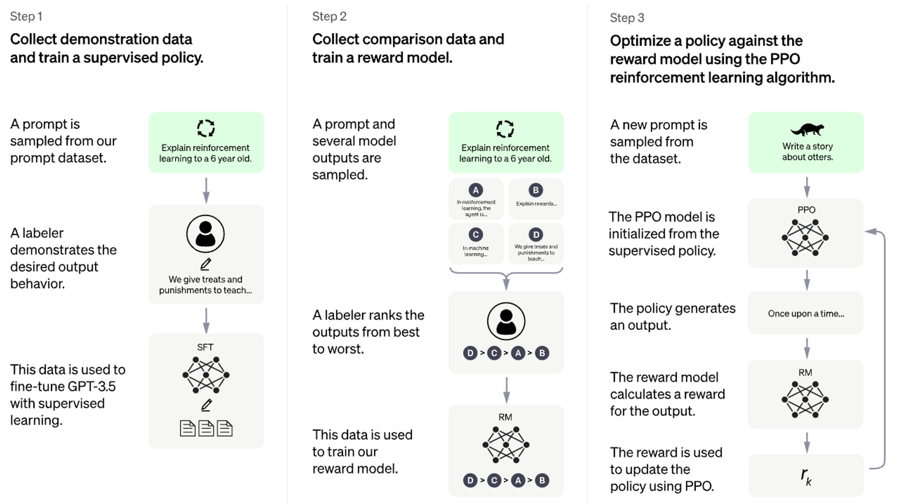
- ChatGPT: Goede uitleg van de onderliggende werking. Create Texts with a Markov Chain Text Generator… and what this has to do with ChatGPT!
Vrijdag | 23-12-2022
- Coding: Rhino - een package om gemodulariseerde/objectgeöriënteerde Shiny code te ontwikkelen; het gebruikt daarvoor het box package.
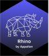
Donderdag | 22-12-2022
- Promotie A4: proof drukversie verbeterd.
Zondag | 18-12-2022
- Visualisatie: Mooie visualisatie over Messi van The xG Philosophy.
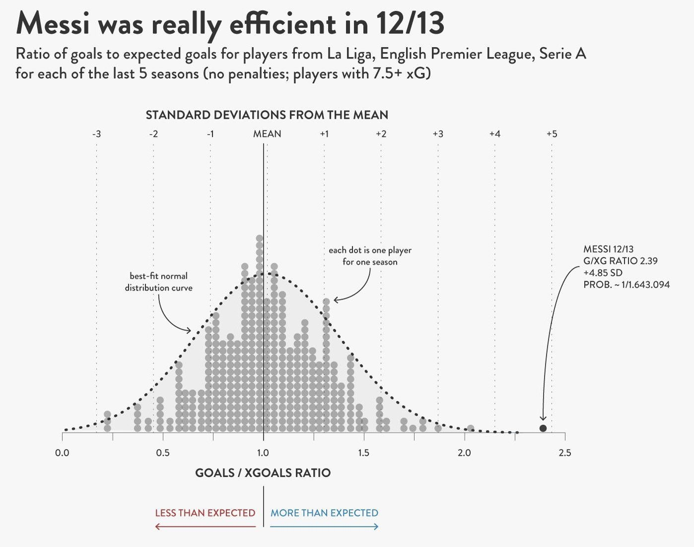
- Model calibration: Nieuw package, probably, in tidymodels om modellen te calibreren. The goal of model calibration is to ensure that the estimated class probabilities are consistent with what would naturally occur.
- Spatial: Een overzicht van verschillende packages op basis van de UK.
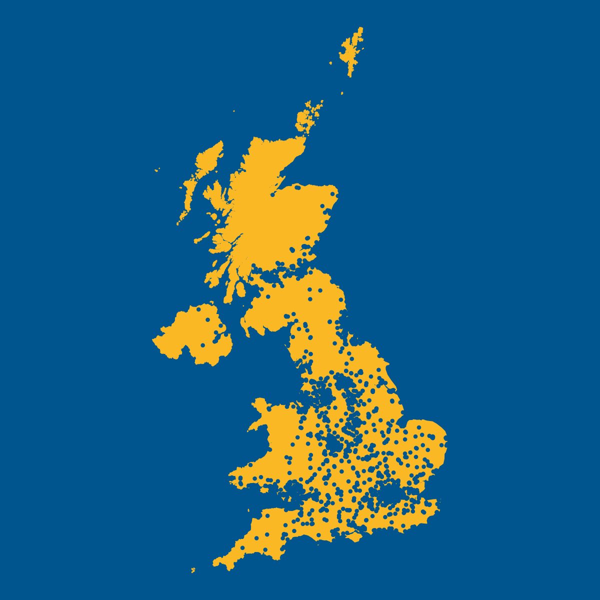
Donderdag | 15-12-2022
- RVerbalExpressions - The goal of
RVerbalExpressionsis to make it easier to construct regular expressions using grammar and functionality inspired by VerbalExpressions. Usage of%>%is encouraged to build expressions in a chain like fashion.
Zondag | 04-12-2022
- Databricks: Azure platform om data te verwerken. TODO: verder verkennen.
November 2022
Dinsdag | 29-11-2022
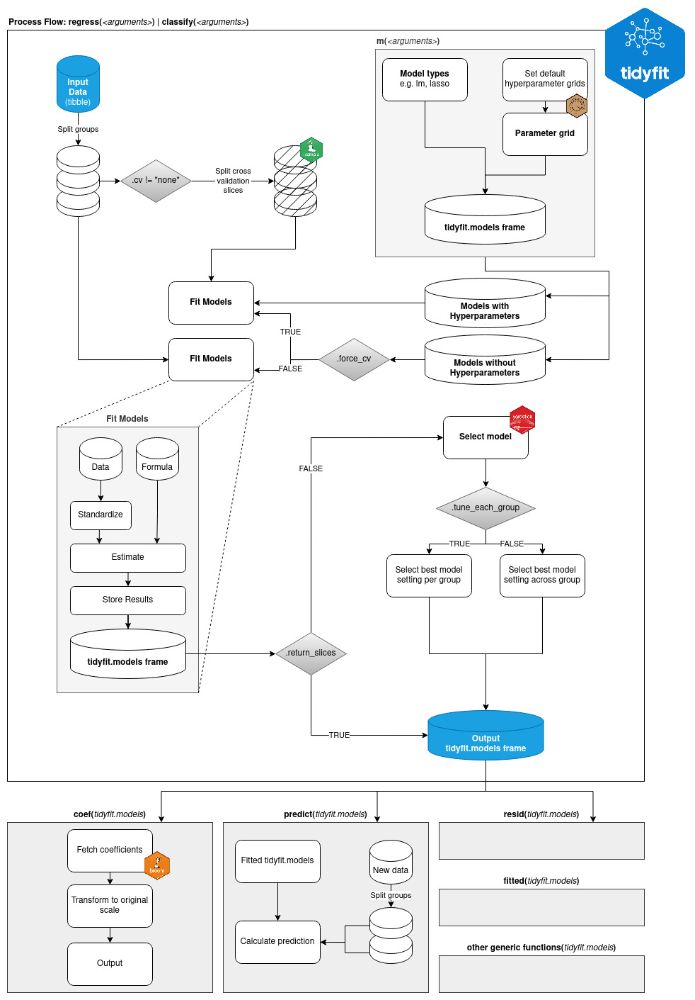
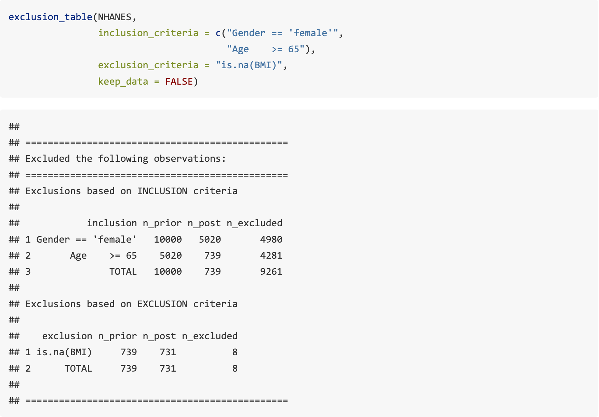
Zaterdag | 26-11-2022
- Blended learning: 7 tips voor het maken van effectieve kennisclips
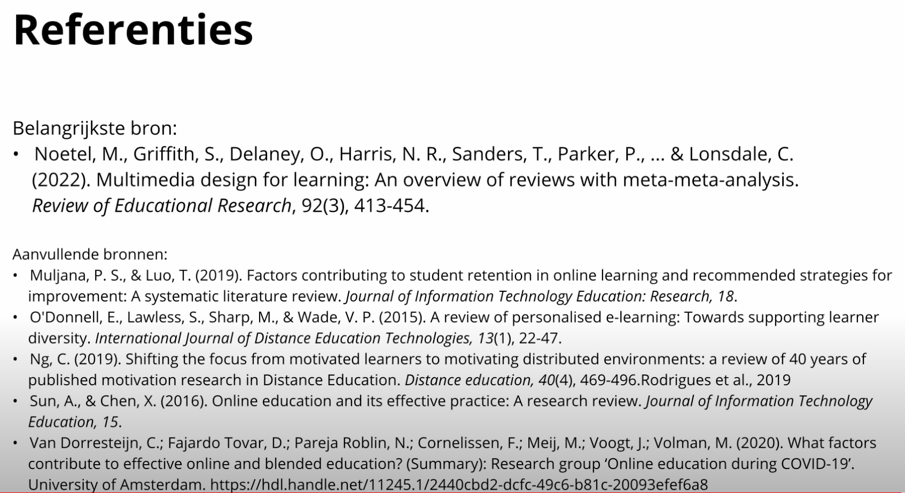
Zondag | 21-11-2022
- Corona: artikel over achterstand in het po. Onderzoek wijst uit: de leervertraging door de schoolsluitingen loopt op. Veldhuis, P. (2022, November 18). Onderzoek wijst uit: de leervertraging door de schoolsluitingen loopt op - NRC. Retrieved November 20, 2022, from https://www.nrc.nl/nieuws/2022/11/17/onderzoek-wijst-uit-de-leervertraging-door-de-schoolsluitingen-loopt-op-a4148607.
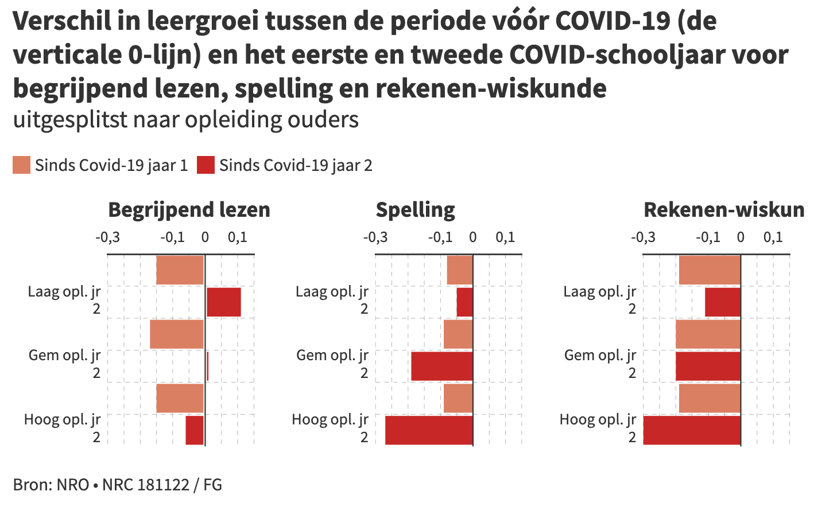
- Gelijke kansen: Inaugurele rede van Carla Haelermans. Haerlemans, C. (2022). Computer says no! Over technologie en ongelijkheid in het onderwijs. doi: 10.26481/spe.20220930ch. Contact mee opgenomen via LinkedIn.
- Autisme: Rebuttal 3 voor A4 afgerond en naar Sander verstuurd.
Zaterdag | 19-11-2022
- Imputatie: alternatief package voor multiple imputation: Multiple Imputation and Synthetic Data Generation with NPBayesImputeCat.
- Imputatie en weighting: MatchThem: Matching and Weighting after Multiple Imputation
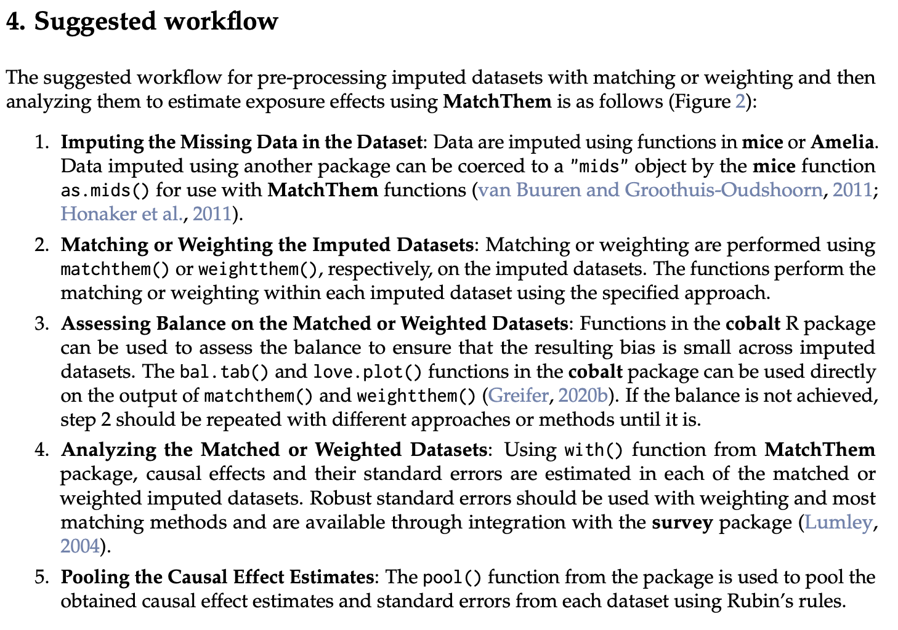
- Reproducible Research: Advancing Reproducible Research by Publishing R Markdown Notebooks as Interactive Sandboxes Using the learnr Package
- Timeseries: tsibbletalk - package om timeseries te koppelen aan meerdere plots. Zie ook artikel: Conversations in Time: Interactive Visualization to Explore Structured Temporal Data.
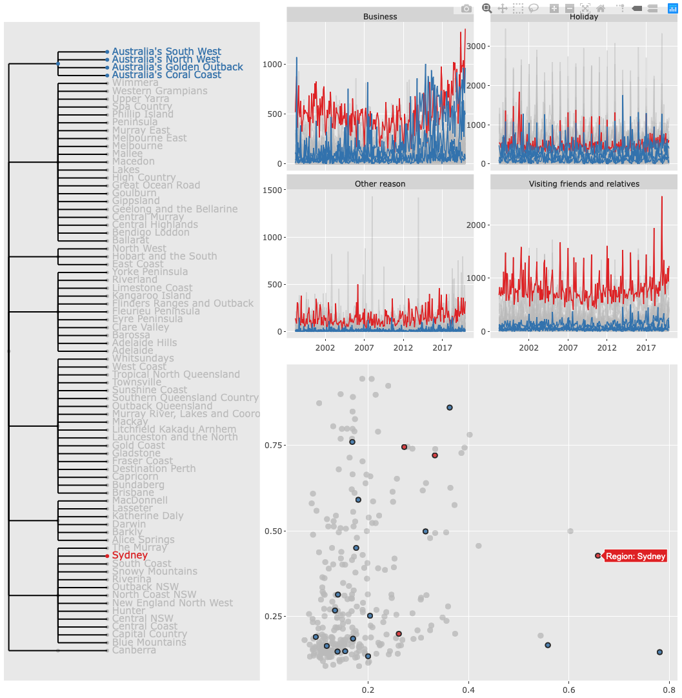
- Data exploratie (EDA): brinton package om in 1x alle mogelijke visualisaties van een variabele te zien. Zie ook A Graphical EDA Tool with ggplot2: brinton.
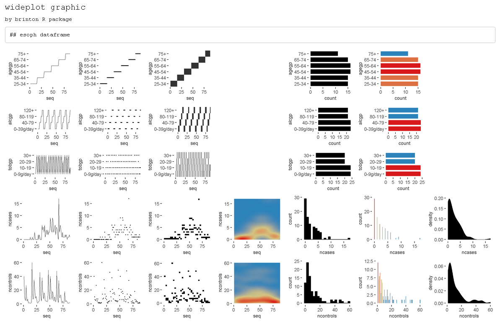
- Data wrangling: Fixing broken and irregular column headers met unheadr package.
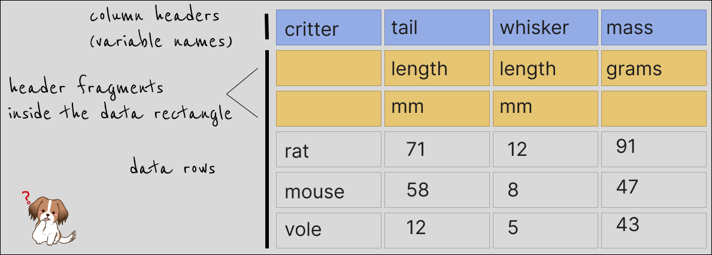
- Tidymodels: hoofdstuk 10 - Resampling for Evaluating Performance. Behandelt bias - idee voor inauguratie - zouden we met resampling binnen het onderwijs kunnen werken, bijv. met klassen? Dat geeft minder bias. Onderscheid tussen low bias models (random forest) en high bias models (lm). De low bias doet het slechter bij een test set, omdat het - zonder sampling - altijd de perfecte verdeling voor de trainingset kan nabootsen. Met x-fold en stratificatie lossen we dit probleem op. Idee > dit kan het onderwijs leren van ML. Je zou op die manier studentengroepen kunnen indelen. Een goede fold is 10; repeats worden uitgevoerd om de noise te reduceren (standaard errors). Een alternatief is bootstrapping (sampling met replacement). Bij tijdsseries kan je gebruik van maken van rolling forecasts resampling. Tijdswinst is te behalen met parallel processing. TODO: parallel processing aanleren.
Vrijdag | 18-11-2022
- Visualisaties: ggblanket package - een wrapper om ggplot met een eenvoudiger interface.
- Visualisaties: simplevis package om de stijl van visualisaties te vereenvoudigen.
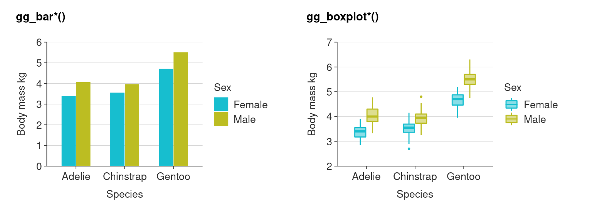
- Tijdseries: grates package om tijdsintervallen eenvoudig te kunnen indelen en viusaliseren.
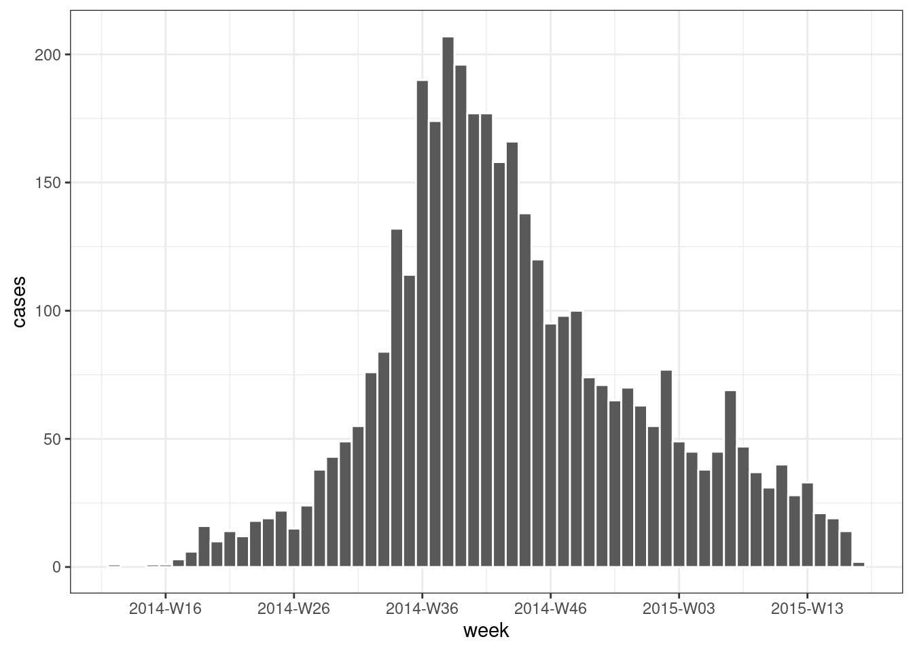
Donderdag | 17-11-2022
- Autisme: A4 commentaar van de editor verwerkt.
Woensdag | 16-11-2022
Text analysis: Hoofdstuk 2 gelezen van Supervised Machine Learning for Text Analysis in R - Tokenization. Gebruik voor tokenization de packages tokenizers (Mullen et al. 2018) and spaCy (Honnibal et al. 2020). Bevat code om tekst uit hoofdstukken te nesten (2.2). Dit kan je eventueel gebruiken om zinnen te scheiden die ‘hostile’ zijn of niet.
Benchmarking: gebruik het bench package om benchmarking uit te voeren:
bench::mark(check = FALSE, iterations = 10, `corpus` = corpus::text_tokens(hcandersen_en$text), `tokenizers` = tokenizers::tokenize_words(hcandersen_en$text), `text2vec` = text2vec::word_tokenizer(hcandersen_en$text), `quanteda` = quanteda::tokenize_word(hcandersen_en$text), `base R` = strsplit(hcandersen_en$text, "\\s") ) #> # A tibble: 5 × 6 #> expression min median `itr/sec` mem_alloc `gc/sec` #> <bch:expr> <bch:tm> <bch:tm> <dbl> <bch:byt> <dbl> #> 1 corpus 75.9ms 81ms 11.9 4.58MB 1.33 #> 2 tokenizers 96.2ms 104ms 9.54 1.01MB 2.38 #> 3 text2vec 78.5ms 82ms 11.9 15.61MB 1.33 #> 4 quanteda 163.2ms 172ms 5.69 8.7MB 1.42 #> 5 base R 294.1ms 302ms 3.15 10.51MB 2.10Text analysis: Een Nederlandse taallijst voor tokenization is gemaakt door de KU-Leuven: RobBERT.
Dinsdag | 15-11-2022
Tidymodels: Improvements to model specification checking in tidymodels - artikel over de manier waarop tidymodels het wisselen tussen verschillende implementaties van een model mogelijk maakt met parsnip en hoe - door de foutmeldingen - duidelijk wordt gemaakt wat je aanvullend moet doen om het werkend te krijgen.
Tidymodels: brulee 0.2.0 - goed voorbeeld van een recipe aan de hand van het brulee package.
“brulee contains several basic modeling functions that use the torch package infrastructure, such as: neural networks, linear regression, logistic regression, and multinomial regression.”
Tidymodels: bundel - package om een model te bouwen en te bundelen inclusief referenties, zodat je dat portable maakt.
The bundle package provides a consistent interface to capture all information needed to serialize a model, situate that information within a portable object, and restore it for use in new settings.

- Tidymodels: censored - parsnip extensie voor survival analyses.
- Tidymodels: agua - package om h2o functionaliteit te kunnen gebruiken.
- Tidymodels: spatialsample - package om samples op basis van GIS te organiseren en visualiseren.
- Tidymodels: bonsai - parsnip extensie voor tree models.
- Text analysis: hoofdstuk 1 gelezen van Supervised Machine Learning for Text Analysis in R - Language and modeling.
- Weighting: Blog van Tidyverse over de ondersteuning van case weights.
- TODO: Oefenen met modelleren met tidymodels aan de hand van mijn proefschrift?
- TODO: H2O in combinatie met agua leren.
Maandag | 14-11-2022
- Tidymodels: hoofdstuk 8 over Feature Engineering with recipes afgerond.
- Balans: themis - package om disbalans op te lossen. TODO: hier meer over lezen en oefenen.
- Balans: Zie ook het artikel over het SMOTE algoritme (Synthetic Minority Over-sampling Technique): Chawla, N. V., Bowyer, K. W., Hall, L. O., & Kegelmeyer, W. P. (2002). SMOTE: Synthetic Minority Over-sampling Technique. Journal of Artificial Intelligence Research, 16, 321–357. doi: 10.1613/jair.953.
Zondag | 13-11-2022
Survival analyses: cursus om survival analyses te leren.
Labels: Column Names as Contracts - het belang van labels. Bijbehorend het convo package.
Datavalidatie: pointblank - package om datavalidatie makkelijk op te stellen en uit te voeren. Zie voor een toepassing Column Names as Contracts.
Datastraat en datateams: Building a team of internal R packages
Causal statitstics: Causal design patterns for data analysts en boekenlijst over causal inference.
Tools: paletton.com om palettes samen te stellen; imagecolorpicker.com om vanaf een foto de dominante kleuren af te leiden.

- Responsible AI: The Hitchhiker’s Guide to Responsible Machine Learning gelezen.
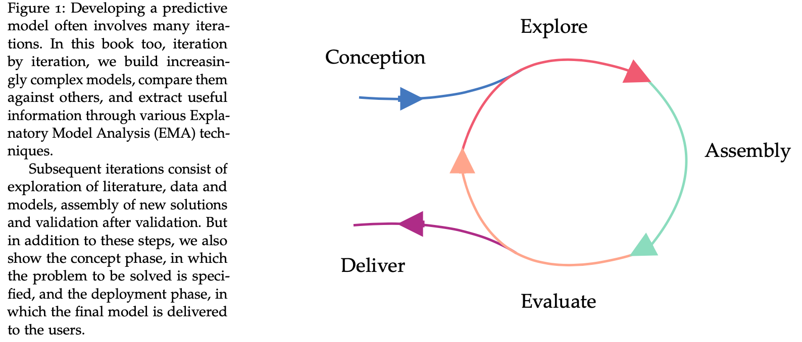
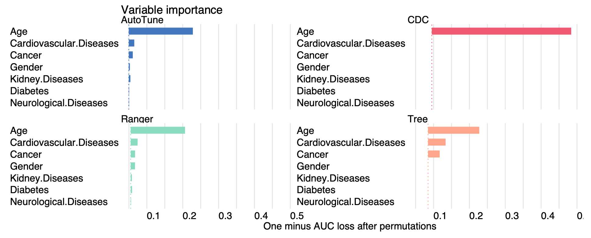
- Responsible AI: TODO: DALEX uitproberen aan de hand van de Titanic data
Zaterdag | 12-11-2022
- Visualisaties: Level op your plots - ggplot met annotaties (site)
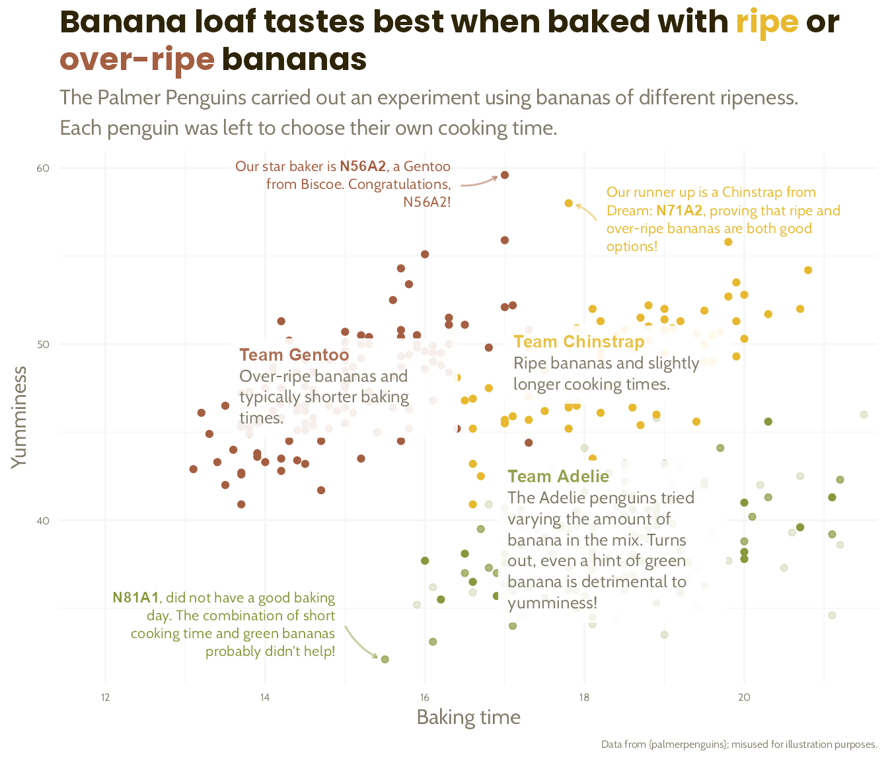
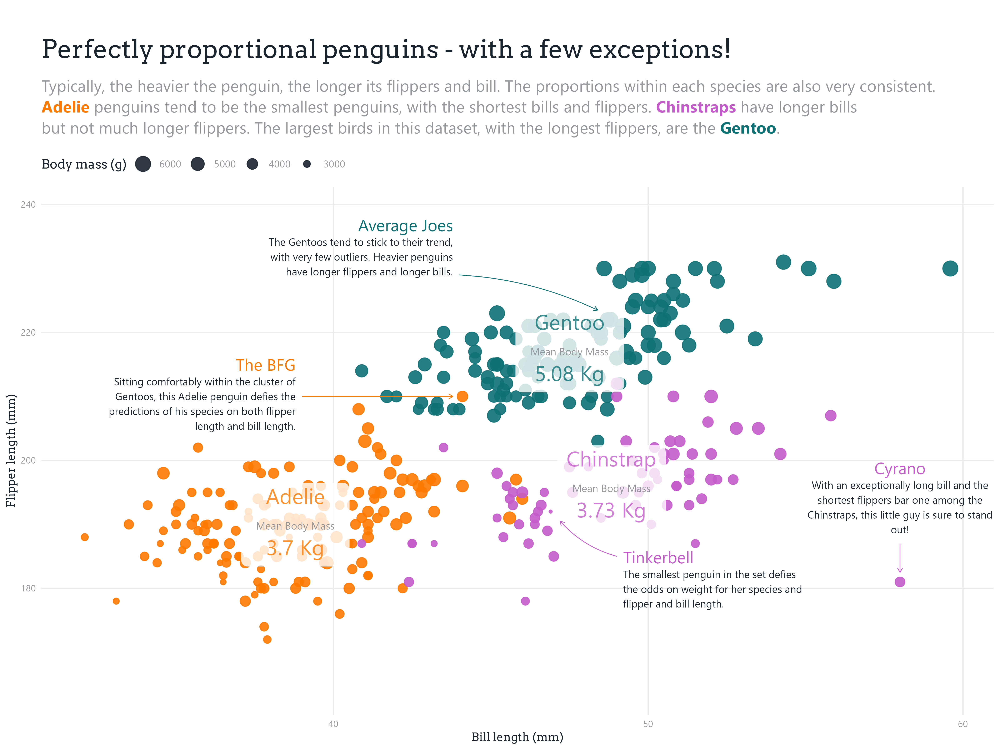
- Text & reporting: VerbaliseR: package om teksten op te zetten en rekening te houden met enkelvoud en meervoud.
- Kleur: MonochromeR: package om kleurpalettes in monochroom op te bouwen.
- Reporting: gtsummary package om standaard summary tabellen te maken en het bijbehorende vignette met voorbeelden van tabellen. Zie ook Reproducible Summary Tables with the gtsummary Package.
- Datastraat: starter: package om een project te starten met default files.
- Labels: The case for variable labels in R - uitleg van labels in data, tabellen en vizs.
Vrijdag | 11-11-2022
- Explainable AI: Gebruik het RSafe package om een black box model om te zetten naar een white box model. Zie ook Simplify your model: Supervised Assisted Feature Extraction for Machine Learning. Nog lezen: Gosiewska, A., Gacek, A., Lubon, P., & Biecek, P. (2019). SAFE ML: Surrogate Assisted Feature Extraction for Model Learning. arXiv. doi: 10.48550/arxiv.1902.11035
- Explainable AI: Methode om feature selection te permuteren om de beste features te selecteren.
- Explainable AI: Gebruik van Shapley values om de bijdrage van een feature aan een voorspelling te begrijpen.
- Explainable AI: Boek: Interpretable Machine Learning, A Guide for Making Black Box Models Explainable

Donderdag | 10-11-2022
- HHs: Lectorale rede van Lampros
Woensdag | 09-11-2022
- Open data: website met open data op nationaal niveau en mogelijkheid om regio’s met elkaar te vergelijken in Europa.
- SQL: r-universe/r-dbi: Verzameling packages om databases te benaderen
Dinsdag | 08-11-2022
- Tidymodels: hoofdstuk 8 (Feature Engineering with recipes) afgerond, maar was ingewikkeld - nog een keer lezen.
Maandag | 07-11-2022
- Tidymodels: hoofdstuk 7 (A Model Workflow) afgerond.
- Imputatie: VIM package (zie ook de visualisaties).
Zondag | 06-11-2022
- Visualisaties: R graphics cookbook - werkt ggplot2 uit
- Missingness: Package om missende waarden te analyseren: naniar
- Validatie: Datavalidatie Cookbook van Mark van der Loo (validate package)
- Bias: fairmodels: a Flexible Tool for Bias Detection, Visualization, and Mitigation in Binary Classification Models - interessant artikel over het modelleren van fairness om bias tegen te gaan: Wiśniewski & Biecek, “The R Journal: fairmodels: a Flexible Tool for Bias Detection, Visualization, and Mitigation in Binary Classification Models”, The R Journal, 2022. Idee voor een vervolgonderzoek naar bias in hoger onderwijs (vergelijken met analyses op veroordeelden). Dit in verband brengen met studentenwelzijn - subsidieaanvraag bij NRO?
- Explanatory Model Analysis: in het verlengde van fairmodels is er een groep van packages om modellen beter uit te leggen (DrWhy) met een bijbehorend boek: Explanatory Model Analysis.
- Responsible AI: methode om van een blackbox model alsnog naar een explainable model te komen: Simplify your model: Supervised Assisted Feature Extraction for Machine Learning. Zie ook het stripboek en de bijbehorende tutorial van de UseR2022 conferentie.
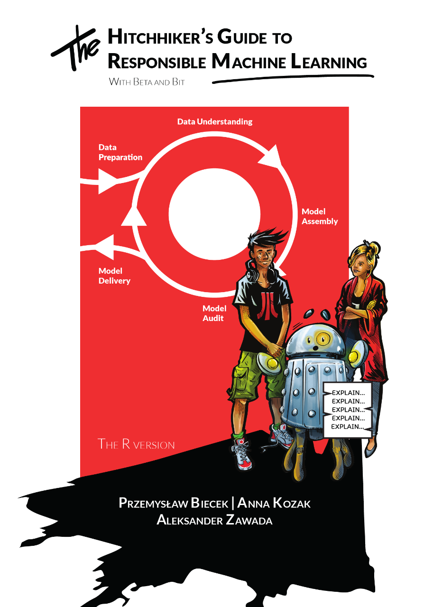
- Tools: Student feedback: Student Pulse (Gorm Eriksen)
- Drift: het probleem dat modellen na Covid anders presteren heet drift. Om dit te berekenen gebruik het drifter package.
- Data cleaning: stringr::str_squish - verwijdert leading en trailing spaces
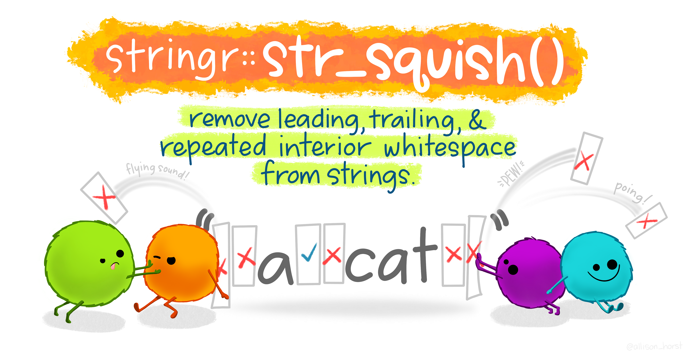
- Tidymodels: hoofdstuk 3 (A Review of R Modeling Fundamentals), hoofdstuk 4 (The Ames Housing Data), hoofdstuk 5 (Spending our Data) en hoofdstuk 6 (Fitting Models with parsnip) afgerond.
- Coding: package conflicted om conflicterende functies te ordenen en de voorkeur te geven aan een bepaald package.
Zaterdag | 05-11-2022
- 3D visualisatie: Presentatie over 3D animatie van een roller coaster door data
- Visualisaties: Visualisaties in python.
- Samenwerking: Openscapes - Samenwerkingsmethode voor data science teams
- Quarto: Video over de mogelijkheden van Quarto
- VU - autisme: Gewerkt aan rebuttal 2 voor A4 (submission naar Autism).
- Data cleaning: cleaner - package om data te checken en cleanen.
- Visualisaties: R-charts com - verzamelwebsite met plots via ggplot
- Illustraties: Allison Horst - open source tekeningen bij data science en populaire packages.
Vrijdag | 04-11-2022
- Textmining: boek over Textmining
- Browzine: laatste updates van journals die je volgt (dienst van De HHs)
Donderdag | 03-11-2022
Studiesucces: Praktijkgidsen OU voor effectief studeren (thinkfest) - #studiestrategie
Student Agency: Onderzoek van Jeanine Haenen onder studenten bij faculteit x? Misschien kunnen Student Agenda meenemen in Machine Learning modellen (thinkfest).
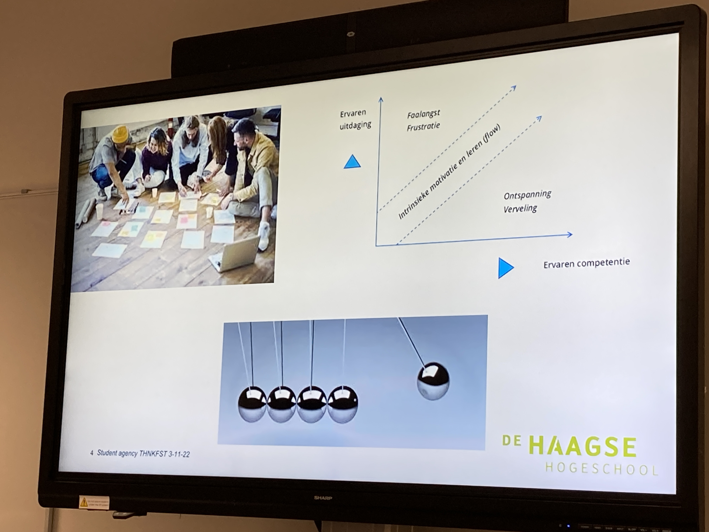
Woensdag | 02-11-2022
- Quarto: Gallery bekeken en presentaties met reveal.js.
- Missingness: Artikel over missing data gelezen (pp 151-156). Little, T. D., Jorgensen, T. D., Lang, K. M., & Moore, E. W. G. (2014). On the Joys of Missing Data. Journal of Pediatric Psychology, 39(2), 151–162. doi: 10.1093/jpepsy/jst048
- UITZOEKEN: p 154: Wat is het verschil tussen inclusive en non-inclusive implementation van MI of FIML?
- Tidymodels: Hoofdstuk 3 en 4 gelezen van Tidy modeling with R.
Dinsdag | 01-11-2022
- Autisme: Positieve uitslag op rebuttal voor A4 in Autism!
- Simulaties: simstudy - package om simulatiedata te maken. Idee: data van de HHs simuleren. Zie als voorbeeld Modeling the secular trend in a cluster randomized trial using very flexible models
- Workflow: R Workflow- een opzet voor een R workflow met een verdere uitwerking in een boek: R Workflow: R Workflow for Reproducible Data Analysis and Reporting.
Oktober 2022
Maandag | 31-10-2022
Vervolglessen gedaan in QGIS: kaartlagen
Begin gemaakt met studie naar factoren die van invloed zijn op gelijke kansen. - Badou, M., & Day, M. (2021). Kansengelijkheid in het onderwijs. Verkennend onderzoek naar factoren die samenhangen met onderwijs(on)gelijkheid (p. 34). Gelijke kansen alliantie.
Countrycode package: package voor het vertalen van countrycodes naar hun naam.
Workflows: Workflowsets: onderdeel van de tidy models; met name de MAE diagram.

Boek: Tidy modeling with R. Interessant - lezen.

Zondag | 30-10-2022
- Dit logboek is bedoeld om bij te houden welke ideeën ik heb voor mijn lectoraat. Het is ook bedoeld voor mijzelf om Quarto aan te leren.
- In de week van 24 oktober 2022 ben ik begonnen mijzelf weer in te werken in het vakgebied, na ongeveer 2 jaar tijd in mijn andere baan als directeur OKC gewerkt te hebben.
- Ik heb een aantal bookmarks verzameld aan de hand van R-packages. Daar zitten meerdere interessante packages bij. Ik zie met name mooie kansen voor GIS, visualisaties (in afbeeldingen en tabellen), rapportages en boeken in Quarto.
Ideeën voor praktijkgerichte impact
- Naar analogie van Data Science in Education Using R een studieboek over onderwijsdata in Nederland met Nederlandse praktijkcases.
- Studievoortgang afbeelden met dygraphs.
- Kaarten maken met QGis; open data project van de gemeente Den Haag bevat nog geen data over onderwijs. Meer informatie via datashop@denhaag.nl. Lid worden van de bijbehorende LinkedIn groep: (open)data Nederlandse Gemeenten.